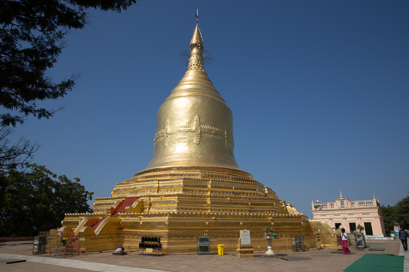
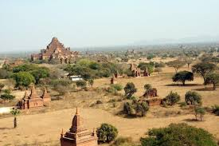
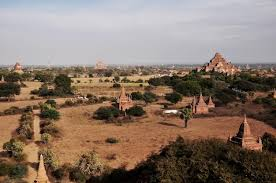
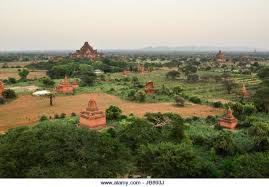

ပုဂံသမိုင်းအကျဉ်းHome
မြန်မာ့သမိုင်းတွင် အထွတ်အထိပ်ရောက်ခဲ့သော ပုဂံခေတ် (Bagan Period) သည် မြန်မာနိုင်ငံ၏ ပထမဆုံးသော ဧကရာဇ်နိုင်ငံတော် (First Myanmar Empire) ဖြစ်ပြီး မြန်မာ့ယဉ်ကျေးမှု၊ စာပေနှင့် ဘာသာသာသနာ၏ အုတ်မြစ်တည်ရာ ဒေသလည်း ဖြစ်ပါသည်။
၁။ ပုဂံမြို့တည်ခြင်းနှင့် အစောပိုင်းကာလ
၂။ ပုဂံရွှေခေတ်နှင့် အနော်ရထာမင်းကြီး
- ပုဂံ၏ အတောက်ပဆုံးကာလမှာ အေဒီ ၁၁ ရာစု (အေဒီ ၁၀၄၄) တွင် အနော်ရထာမင်းကြီး နန်းတက်လာချိန်မှ စတင်သည်။
- နိုင်ငံတော်တည်ဆောက်ခြင်း: အနော်ရထာမင်းကြီးသည် ပြန့်ကျဲနေသော မြို့ပြနိုင်ငံများကို စုစည်းပြီး ပထမမြန်မာနိုင်ငံတော်ကြီးကို တည်ထောင်ခဲ့သည်။
- သာသနာပြုခြင်း: သထုံပြည်မှ ကြွလာသော ရှင်အရဟံ ၏ လမ်းညွှန်မှုဖြင့် အရည်းကြီးတို့၏ အယူဝါဒကို ပယ်ဖျက်ကာ ထေရဝါဒဗုဒ္ဒဘာသာ ကို နိုင်ငံတော်၏ အဓိကကိုးကွယ်မှုအဖြစ် သတ်မှတ်ခဲ့သည်။
- စာပေနှင့် ယဉ်ကျေးမှု: ပျူ၊ မွန် နှင့် ဗမာ ယဉ်ကျေးမှုများ ပေါင်းစပ်ကာ မြန်မာစာပေနှင့် အနုပညာရပ်များ စတင်ထွန်းကားလာခဲ့သည်။
၃။ အထင်ကရ ပုဂံမင်းများနှင့် ဗိသုကာလက်ရာများ
- ပုဂံခေတ်တစ်လျှောက်တွင် စေတီပုထိုးပေါင်း သောင်းနှင့်ချီ၍ တည်ထားခဲ့ကြရာ ယနေ့တိုင် နှောင်းလူတို့ အံ့မခန်း လေ့လာနိုင်ဆဲ ဖြစ်သည်။
- အနော်ရထာမင်း ပထမမြန်မာနိုင်ငံတော် တည်ထောင်ခြင်း၊ ရွှေစည်းခုံဘုရား တည်ခြင်း
- ကျန်စစ်သားမင်း မွန်-မြန်မာ ချစ်ကြည်ရေး၊ အာနန္ဒာဘုရား တည်ခြင်း
- အလောင်းစည်သူမင်း နိုင်ငံအနှံ့ တိုင်းခန်းလှည့်လည်ခြင်း၊ သဗ္ဗေညုဘုရား တည်ခြင်း
- နရပတိစည်သူမင်း မြန်မာမှု ဗိသုကာ ထွန်းကားခြင်း၊ စူဠာမဏိဘုရား တည်ခြင်း
- ထီးလိုမင်းလိုမင်း သာသနာရေး အားပေးခြင်း၊ ထီးလိုမင်းလိုဘုရား တည်ခြင်း
၄။ ပုဂံခေတ်၏ နိဂုံး
- ပုဂံခေတ်သည် အေဒီ ၁၃ ရာစုနှောင်းပိုင်းတွင် တဖြည်းဖြည်း အင်အားချည့်နဲ့လာခဲ့သည်။
- အတွင်းရေး: ဘုရားဝတ္တကမြေများ များပြားလာသဖြင့် နိုင်ငံတော်က ရရှိသော အခွန်အတုတ် လျော့နည်းလာပြီး စီးပွားရေး ထိခိုက်လာခြင်း။ ပြင်ပရန်: အေဒီ ၁၂၈၇ တွင် မွန်ဂို (တရုတ်ပြည်မှ ကူဗလိုင်ခန်၏ တပ်များ) ကျူးကျော်ဝင်ရောက်လာခြင်း။ အုပ်ချုပ်မှုပြိုကွဲခြင်း: နရသီဟပတေ့မင်း (တရုတ်ပြေးမင်း) လက်ထက်တွင် ဗဟိုအစိုးရ အာဏာစက် လျော့နည်းသွားပြီး ပုဂံခေတ် နိဂုံးချုပ်ကာ မြန်မာ့သမိုင်းတွင် ပင်းယ၊ စစ်ကိုင်း၊ အင်းဝ စသည့် ခေတ်သစ်များ ပေါ်ထွန်းလာခဲ့သည်။
၅။ ယနေ့ခေတ်ပုဂံ
- ယနေ့ခေတ်တွင် ပုဂံသည် မြန်မာနိုင်ငံ၏ အဓိက ဂုဏ်ဆောင် ရှေးဟောင်းယဉ်ကျေးမှုဇုန် ဖြစ်သည်။
- ကမ္ဘာ့အမွေအနှစ်: ၂၀၁၉ ခုနှစ်တွင် ယူနက်စကို (UNESCO) မှ ကမ္ဘာ့အမွေအနှစ်နေရာအဖြစ် တရားဝင် အသိအမှတ်ပြုခဲ့သည်။ ထိန်းသိမ်းမှု: စေတီပုထိုးပေါင်း ၃,၀၀၀ ကျော်ကို ယနေ့တိုင် လေ့လာဖူးမြော်နိုင်ပြီး မြန်မာ့ဗိသုကာပညာ၏ အထောက်အထားများအဖြစ် တည်ရှိနေဆဲ ဖြစ်သည်။ မှတ်ချက်: ပုဂံသမိုင်းသည် မြန်မာတို့၏ ဇာတိသွေး၊ ဇာတိမာန်ကို ဖော်ဆောင်ရုံသာမက အရှေ့တောင်အာရှ၏ အကြီးကျယ်ဆုံးသော ဗုဒ္ဓဘာသာ ယဉ်ကျေးမှုအချက်အချာတစ်ခုလည်း ဖြစ်ခဲ့ပါသည်။
ထင်ရှားကျော်ကြားသော ပုဂံဘုရားများ Home
ရွှေစည်းခုံစေတီ

အာနန္ဒာဘုရား

ဗူးဘုရား

တန့်ကြည်တောင်ဘုရား

တန့်ကြည်တောင်ဘုရား
တန့်ကြည်တောင်ဘုရား

ပုဂံရူ့ခင်းအလှများHome
Ancient Wonders of the Timeless Temples in Bagan
 View HistoryView landscape ruins cityscape unesco world heritage site
 View HistoryAncient temple in Bagan after sunset
 View Historyပုဂံယဉ်ကျေးမှု အမွေအနှစ်ဒေသ
View Historyပုဂံကမ္ဘာ့ယဉ်ကျေးမှုအမွေအနှစ် ...
View Historyပုဂံရှေးဟောင်းအဆောက်အဉီ
View HistoryContact Us
စိတ်ချမ်းသာစွာဖြင့် ပုဂံဘုရားဖူးသွားလိုပါသလား Bagan Project Team-2 နဲ့ ဆက်သွယ်လိုက်ပါ
Email: team2baganview@gmail.comPhone: +9509xxxxxxxxx
Address: ............................. Send us a Message